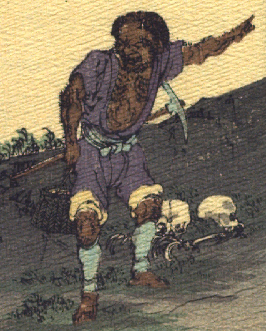

茶色の肌の鬼。短い髪を生やし、しかめ面をしている。藍色の上着を着て胸元をはだけ、同色の股引を膝上までまくり上げている。水色の脚絆を着けている。胸元と腕、膝に毛が生えている。腰帯につるはしを差し、右手に籠を持ち、左手で画面右側を指差している。地面に人骨が転がっている。
出典：親書誌：U426_nichibunken_0113：Les Ogres d'Oyeyama／日付：2006／資源識別子：U426_nichibunken_0113_0003_0000
Copyright (c)2010- International Research Center for Japanese Studies, Kyoto, Japan. All rights reserved.